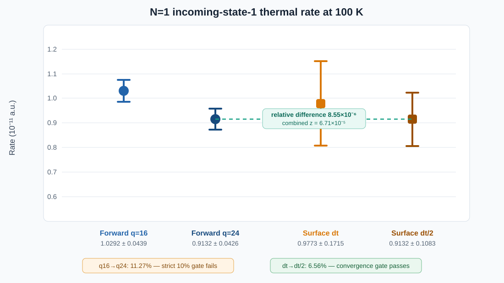

<!doctype html>
<html lang="en">
  <head>
    <meta charset="utf-8">
    <meta name="viewport" content="width=device-width, initial-scale=1">
    <meta name="description" content="A numerical and algorithmic N=1 test showing when reactant-launched FSSH and Tully's dividing-surface history reconstruction estimate the same thermal flux-side rate.">
    <title>From Reactants or the Dividing Surface? An N=1 Equivalence Test | Lihui Gao</title>
    <link rel="icon" href="../assets/img/favicon.svg" type="image/svg+xml">
    <link rel="stylesheet" href="../assets/css/styles.css">
    <script>window.MathJax = { tex: { inlineMath: [["\\(", "\\)"]], displayMath: [["\\[", "\\]"]] } };</script>
    <script defer src="https://cdn.jsdelivr.net/npm/mathjax@3/es5/tex-chtml.js"></script>
  </head>
  <body>
    <header class="site-header">
      <a class="brand" href="../index.html" aria-label="Back to home"><span class="brand-mark">LG</span><span class="brand-name">Lihui Gao</span></a>
      <button class="nav-toggle" type="button" aria-label="Open navigation" aria-expanded="false" aria-controls="site-nav"><span></span><span></span><span></span></button>
      <nav class="site-nav" id="site-nav" aria-label="Main navigation"><a href="../index.html#articles">Articles</a><a href="../tags.html">Tags</a><a href="../series.html">Series</a><a href="../life.html">生活记录</a><a href="../index.html#archive">Archive</a><span class="contact-text">Contact: 23110190022@m.fudan.edu.cn</span><a href="https://github.com/Lihuigao21" target="_blank" rel="noreferrer">GitHub</a></nav>
    </header>

    <main id="top">
      <article class="post">
        <header class="post-header">
          <p class="section-label">Reaction-Rate Methods · Sequel</p>
          <h1>From Reactants or the Dividing Surface? An N=1 Equivalence Test</h1>
          <p class="post-meta">2026.08.05 - Flux-Side Rate / FSSH / Rare-Event Sampling</p>
        </header>

        <div class="post-content">
          <p class="lead">
            There are two apparently different ways to initialize a nonadiabatic reaction-rate trajectory. One launches a pure incoming electronic state in the reactant asymptote. The other starts directly at the interaction-region dividing surface and reconstructs the missing electronic history backward in time. At one bead, after converging the energy quadrature and the trajectory time step, the two calculations give (9.132066	imes10^{-12}) and (9.132144	imes10^{-12}) a.u. Their relative difference is (8.55	imes10^{-6}). For this rate observable, they are the same calculation expressed through two sampling measures.
          </p>
          <p>
            This is a sequel to <a href="trajectory-kubo-flux-side-comparison.html">Comparing Trajectory Dynamics with Kubo Flux-Side Correlations</a>. The previous article explained how a reactant-launched, barrier-conditioned trajectory ensemble can be compared with a Kubo flux-side correlation. The unresolved question was whether Tully's much more elaborate dividing-surface initialization estimates that same object. Here the question is isolated at (N=1), where ring-polymer complications disappear.
          </p>

          <h2>The Question Being Tested</h2>
          <p>
            The comparison is not between CSSH and RPSH as complete methods. It freezes the same one-dimensional two-state Hamiltonian, the same fewest-switches hopping rule, the same frustrated-hop policy, the same electronic propagator, and the same asymptotic product indicator. Only the sampling representation of the thermal rate changes:
          </p>
          <div class="table-scroll">
            <table>
              <thead><tr><th>Estimator</th><th>Initial point</th><th>Electronic condition</th><th>Rare-event treatment</th></tr></thead>
              <tbody>
                <tr><td>Forward</td><td>Reactant asymptote</td><td>Pure incoming state (a)</td><td>Boltzmann energy integral</td></tr>
                <tr><td>Surface</td><td>(R=R^ddagger)</td><td>Reconstructed from a backward history</td><td>TST prefactor, likelihood ratio, and crossing correction</td></tr>
              </tbody>
            </table>
          </div>
          <p>
            Setting (N=1) is decisive. The bead approximation (BA), centroid approximation (CA), and ordinary single-copy FSSH all use the same nuclear coordinate and the same nonadiabatic coupling. Any remaining difference must come from initialization, history weighting, discretization, or sampling—not from averaging the NAC over beads.
          </p>

          <h2>Why Both Estimators Target One Flux-Side Rate</h2>
          <p>
            For one incoming state (a) and final state (b), direct thermal scattering gives
          </p>
          <div class="math-block">\[
            k^{\mathrm F}_{ab}=
            \frac{1}{2\sqrt{2\pi M\beta}}
            \int_0^\infty d(\beta E)\,e^{-\beta E}\,
            \mathcal P_{ab}(E).
          \]</div>
          <p>
            The factor (1/2) is not fitted: the two asymptotic electronic states contribute to the reactant partition function. If transmission is classically impossible below a threshold (Delta), the integral is shifted to
          </p>
          <div class="math-block">\[
            k^{\mathrm F}_{ab}=
            \frac{e^{-\beta\Delta}}{2\sqrt{2\pi M\beta}}
            \int_0^\infty dx\,e^{-x}
            \mathcal P_{ab}(\Delta+x/\beta),
          \]</div>
          <p>
            which is evaluated deterministically by Gauss–Laguerre quadrature. This is the energy-integrated analogue of sampling an exponentially distributed above-barrier excess energy.
          </p>

          <p>
            The same long-time flux-side object can instead be cut at an internal dividing surface:
          </p>
          <div class="math-block">\[
            k^{\mathrm S}_{ab}=\sum_i k_i^{\mathrm{TST}}\kappa^i_{ab},
            \qquad
            k_i^{\mathrm{TST}}=
            \frac{e^{-\beta[V_i(R^\ddagger)-V_i(-\infty)]}}
            {2\sqrt{2\pi M\beta}}.
          \]</div>
          <p>
            A reactive path may cross (R^ddagger) in the positive direction (n_+) times. Sampling every crossing would count that path (n_+) times, so each sampled event contributes (1/n_+). The path identity is simply
          </p>
          <div class="math-block">\[
            \sum_{j\in\text{positive crossings}}\frac{1}{n_+}=1.
          \]</div>
          <p>
            Starting in the interaction region also removes knowledge of the incoming electronic state. A trial backward history is therefore drawn from a convenient proposal (Q(H)), while the physical FSSH history has probability (P(H\mid a)). The missing measure is restored by
          </p>
          <div class="math-block">\[
            W(H)=\frac{P(H\mid a)}{Q(H)},
            \qquad
            \mathbb E_Q[W(H)F(H)]=\mathbb E_P[F(H)].
          \]</div>
          <p>
            With positive centroid momentum sampled from the half-Maxwell distribution, the implemented transmission coefficient is
          </p>
          <div class="math-block">\[
            \kappa^i_{ab}=
            \frac{\left\langle (\bar P/M)\,
            \mathbf 1_a(n_{-t})\mathbf 1_B(R_t)\mathbf 1_b(n_t)
            W/n_+\right\rangle_{R^\ddagger,i,\bar P>0}}
            {\left\langle \bar P/M\right\rangle_{R^\ddagger,i,\bar P>0}}.
          \]</div>
          <p>
            Notice that the momentum sampler itself is not already flux weighted. The single factor (ar P/M) appears in the ratio. This avoids both missing and double-counting the flux weight.
          </p>

          <h2>What the Algorithms Actually Do</h2>
          <h3>Reactant-launched estimator</h3>
          <p>
            The forward implementation constructs the quadrature energies, runs an energy-resolved FSSH scattering ensemble for each incoming state, and contracts the transmission probabilities with the thermal weights:
          </p>
          <pre><code>beta = 1.0 / (kB * temperature)
nodes, weights = np.polynomial.laguerre.laggauss(q)
energies = energy_shift + nodes / beta
weights = np.exp(-beta * energy_shift) * weights

for energy_index, energy in enumerate(energies):
    estimate = run_energy_resolved_classical_fssh(
        total_energy=energy,
        incoming_state=incoming,
        x_start=-3.0,
        reactant_boundary=-3.05,
        product_boundary=2.0,
        frustrated_hop_policy="keep",
    )
    probability[energy_index] = estimate.transmitted / estimate.ntraj

free_flux = 0.5 / np.sqrt(2.0 * np.pi * mass * beta)
rate = free_flux * np.dot(weights, probability)</code></pre>

          <h3>Dividing-surface estimator</h3>
          <p>
            The surface sampler first draws canonical momenta conditioned on positive centroid momentum. It then reconstructs a backward electronic history, launches the physical forward path, and divides a reactive contribution by its positive crossing multiplicity:
          </p>
          <pre><code>momenta = rng.normal(0.0, np.sqrt(mass * nbeads / beta), nbeads)
pbar = np.mean(momenta)
if pbar &lt; 0.0:
    momenta -= 2.0 * pbar          # half-Maxwell centroid

f = trial_hop_probabilities(coupling, active, dt)
g = physical_forward_fssh_probabilities(history, active, dt)
step_factor = g[physical_target] / f[proposal_target]
W = np.prod(step_factors)

nplus = count_forward_crossings(path, dividing_surface)
corrected = W / nplus if reactive and nplus &gt; 0 else 0.0

flux = pbar / mass
kappa = np.mean(flux * corrected) / np.mean(flux)
rate = k_tst * kappa</code></pre>
          <p>
            The dividing-surface electronic amplitudes are not assigned from a local Boltzmann population. They are obtained by inverting the unitary electronic propagation so that the backward endpoint satisfies the pure incoming condition. Hop and no-hop likelihood factors then convert the artificial backward proposal into the physical forward history measure.
          </p>

          <h2>The Remaining Theoretical Gap: Finite-Step Reversal</h2>
          <p>
            The change-of-measure identity is exact only if the proposal covers the physical path support and the reverse mapping is correct. The electronic event tree was verified to normalize for one- and two-step histories. A full discrete nuclear path is subtler: the backward algorithm propagates on a surface and then proposes a hop, whereas its literal reverse is a hop followed by propagation. These orderings become the same as (Delta t\to0), but they are not an exact finite-step theorem.
          </p>
          <p>
            This is why simply adding more trajectories would have been a poor test. The calculation first had to close two independent systematic errors: the forward energy quadrature and the surface-trajectory time step.
          </p>

          <h2>Pre-Registered N=1 Convergence Test</h2>
          <p>
            The test used the 100 K, one-dimensional, two-state reaction model of Shushkov, Li, and Tully. Incoming state 1 was selected because an earlier low-statistics calculation showed the largest apparent disagreement there. All other choices were frozen: midpoint-exponential electronic propagation, one nuclear substep, frustrated-hop policy <code>keep</code>, the <code>physical_forward_bijective</code> history convention, and boundaries (-3.05/2.0) bohr.
          </p>
          <div class="table-scroll">
            <table>
              <thead><tr><th>Systematic check</th><th>Levels</th><th>Independent sampling</th><th>Gate</th></tr></thead>
              <tbody>
                <tr><td>Forward energy integral</td><td>(q=16,24)</td><td>3 replicates, 50 trajectories per energy</td><td>Combined (2\sigma) and ≤10% relative change</td></tr>
                <tr><td>Surface time step</td><td>0.0036, 0.0018 fs</td><td>3 replicates × 16 blocks × 25 trajectories</td><td>Combined (2\sigma) and ≤10% relative change</td></tr>
                <tr><td>Estimator equivalence</td><td>(q=24) versus (Delta t/2)</td><td>Independent estimators</td><td>Combined (2\sigma)</td></tr>
              </tbody>
            </table>
          </div>
          <p>
            In total, 216 compact result blocks contained 8,400 trajectories. Every task completed with empty standard error logs. A strict validator checked the temperature, bead count, incoming state, quadrature and seed grids, finite values, transmission counts, hop budgets, crossing histograms, and effective sample sizes. The minimum nonzero contribution ESS fraction was 4%.
          </p>

          <h2>Results</h2>
          <figure>
            
            <figcaption>One-standard-error rate estimates in units of (10^{-11}) a.u. The surface estimator is stable under time-step halving. The converged-layer (q=24) forward and half-step surface central values are visually indistinguishable. The forward (q=16\to24) change, however, is 11.27% and narrowly fails the pre-registered 10% systematic-error gate.</figcaption>
          </figure>

          <div class="table-scroll">
            <table>
              <thead><tr><th>Comparison</th><th>First rate (a.u.)</th><th>Second rate (a.u.)</th><th>Relative difference</th><th>(z)</th><th>Decision</th></tr></thead>
              <tbody>
                <tr><td>Forward (q=16\to24)</td><td>((1.029152\pm0.043851)\times10^{-11})</td><td>((0.913207\pm0.042551)\times10^{-11})</td><td>11.27%</td><td>-1.898</td><td>Strict 10% gate fails</td></tr>
                <tr><td>Surface (Delta t\to\Delta t/2)</td><td>((0.977350\pm0.171540)\times10^{-11})</td><td>((0.913214\pm0.108330)\times10^{-11})</td><td>6.56%</td><td>-0.316</td><td>Pass</td></tr>
                <tr><td>(q=24) forward vs. (Delta t/2) surface</td><td>((0.913207\pm0.042551)\times10^{-11})</td><td>((0.913214\pm0.108330)\times10^{-11})</td><td>(8.55\times10^{-6})</td><td>(6.71\times10^{-5})</td><td>Pass</td></tr>
              </tbody>
            </table>
          </div>

          <h2>The Plain-Language Conclusion</h2>
          <p>
            At (N=1), reactant launch and dividing-surface history reconstruction give the same thermal rate once the two numerical representations are sufficiently resolved. The elaborate surface construction is not introducing a persistent 30% bias. An earlier calculation had reported a surface/forward ratio of 0.681 for incoming state 1, but that comparison used only eight energy nodes and much weaker surface statistics. The discrepancy disappears when both error budgets are resolved.
          </p>
          <p>
            There is nevertheless one deliberate qualification. The overall pre-registered gate is still recorded as <em>not passed</em>, because the forward result changes by 11.27% between (q=16) and (q=24), just beyond the 10% limit. The near-perfect (q=24)-versus-half-step agreement is extremely strong positive evidence, but it does not justify changing a convergence rule after seeing the result.
          </p>
          <p>
            The honest statement is therefore:
          </p>
          <div class="math-block">\[
            \boxed{\text{N=1 rate-level equivalence is strongly supported;
            the strict forward quadrature gate remains open.}}
          \]</div>

          <h2>What This Does—and Does Not—Establish</h2>
          <ul>
            <li><strong>Established numerically:</strong> the two initialization schemes are consistent estimators of the same (N=1) incoming-state-resolved thermal rate.</li>
            <li><strong>Diagnosed:</strong> the former 32% discrepancy was not evidence of a stable missing-history weight; insufficient energy resolution and finite statistics were enough to create it.</li>
            <li><strong>Not established:</strong> equality of the full crossing-conditioned electronic distributions, phases, or individual microscopic paths.</li>
            <li><strong>Not generalized:</strong> the result says nothing about the validity of bead-averaged NACs at (N&gt;1). That is a separate BA approximation problem.</li>
            <li><strong>Still open:</strong> a (q=32) or (q=40) deterministic check would close the strict quadrature gate more cleanly than adding more trajectories at the same quadrature order.</li>
          </ul>

          <h2>Executable Algorithm Core</h2>
          <ul class="code-list">
            <li><a href="../assets/code/mqc/n1_flux_side_equivalence_core.py">n1_flux_side_equivalence_core.py</a> contains executable, self-checking implementations of the shifted Gauss–Laguerre forward estimator, positive-centroid canonical momentum sampling, path-likelihood reweighting, the (1/n_+) surface estimator, and the combined-(\sigma) convergence test.</li>
            <li><a href="../assets/code/mqc/cssh_rate_algorithm.py">cssh_rate_algorithm.py</a> supplies the complementary trajectory-level machinery used in the preceding article: electronic propagation, fewest-switches trial probabilities, accepted hops, frustrated hops, and conditional thermal-rate estimation.</li>
          </ul>

          <h2>References</h2>
          <ul>
            <li>Shushkov, Li, and Tully, “Ring polymer molecular dynamics with surface hopping,” <em>J. Chem. Phys.</em> 137, 22A549 (2012), <a href="https://doi.org/10.1063/1.4766449" target="_blank" rel="noreferrer">doi:10.1063/1.4766449</a>.</li>
            <li>Tully, “Molecular dynamics with electronic transitions,” <em>J. Chem. Phys.</em> 93, 1061 (1990).</li>
            <li><a href="trajectory-kubo-flux-side-comparison.html">Comparing Trajectory Dynamics with Kubo Flux-Side Correlations</a>, the preceding article in this sequence.</li>
          </ul>
        </div>

        <nav class="post-nav" aria-label="Article navigation"><a href="trajectory-kubo-flux-side-comparison.html">&lt;- Previous: Trajectory–Kubo Comparison</a><a href="../index.html">Back to article list</a></nav>
      </article>
    </main>

    <footer class="site-footer"><p>(c) <span id="year"></span> Lihui Gao. Built with GitHub Pages.</p><a href="#top">Back to top</a></footer>
    <script src="../assets/js/main.js"></script>
  </body>
</html>
